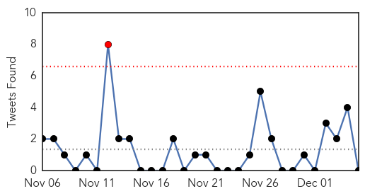
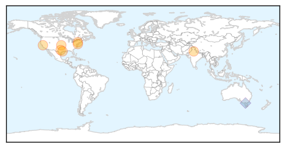
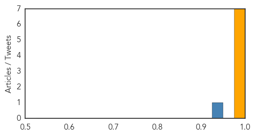

Unknown
30-Day Web Trend
1 alerts, 0 warnings

30-Day Twitter Trend
1 alerts, 0 warnings

Article Locations
Article Confidences

Top Articles:
- 0.998
- Flu vaccine may not be as effective this year
- 0.995
- Flu vaccine may be less effective this winter
- 0.991
- CDC: Flu Vaccine May be Less Effective This Winter
- 0.990
- Flu cases growing in Pa., thanks to less effective shots for predominant strain
- 0.989
- WCAX.COM Local Vermont News, Weather and Sports-
- 0.985
- Health care professionals say there are simple ways to protect y - KTRE.com
- 0.976
- More flu on the way
- 0.925
- Flu vaccine might be less effective this season, CDC says
- 0.918
- New Mexico: Two additional hantavirus cases reported, one death in McKinley County
- 0.917
- Chicago Tribune
- 0.917
- Chicago Tribune
- 0.917
- Chicago Tribune
- 0.917
- Chicago Tribune
- 0.917
- Chicago Tribune
- 0.917
- Chicago Tribune
- 0.917
- Chicago Tribune
- 0.917
- Chicago Tribune
- 0.917
- Chicago Tribune
- 0.917
- Chicago Tribune
- 0.917
- Chicago Tribune
- 0.917
- Chicago Tribune
- 0.917
- Chicago Tribune
- 0.917
- Chicago Tribune
- 0.917
- Chicago Tribune
- 0.917
- Chicago Tribune
- 0.917
- Chicago Tribune
- 0.917
- Chicago Tribune
- 0.917
- Chicago Tribune
- 0.910
- The world windows to Thailand
- 0.895
- South Sudan Kala-Azar Update - Volume 1, Issue 2 (30 November 2014) - South Sudan
- 0.867
- No more health camps without prior permission: Punjab government
- 0.856
- Birmingham doctors advise still getting flu shot
- 0.807
- Health warning for Lake Whangape
- 0.773
- UND scientists identify Lyme disease in Grand Forks
- 0.746
- Flu vaccine may be less effective this year
- 0.730
- Pakistan: 1,029 mothers, 211 kids contract HIV/Aids
- 0.700
- Monkey Fever Confirmed in Malappuram
- 0.698
- W.Va. health officer leaving year after chemical spill
- 0.675
- NOTICE : Haiti Travel Warning, for U.S. citizens
- 0.672
- Antibiotic-Resistant Superbugs Are Causing Bacterial Infections
- 0.659
- 10 permanently blinded in botched surgeries in India
- 0.659
- There's A Disturbing Reason Behind The Recent Rise In Deadly Infections
- 0.636
- Kenya : Hope as Bill Gates pledges more funds for TB vaccine
- 0.621
- We May Have Reached The 'Apocalyptic Scenario' With Antibiotics
- 0.608
- No medical camps without approval of civil surgeons: Health minister
- 0.603
- Florida gets $1.2M for mental health services
- 0.581
- Obama names Ashton Carter as new defence chief
- 0.581
- French union boss under fire for exorbitant renovations
- 0.581
- France agrees to $60 million fund for Nazi-era deportees
- 0.581
- Paris suburb reels after 'anti-Semitic' robbery, rape
Showing top 50 articles...
Top Tweets:
- 0.662
- CDC: Flu shot less effective; virus has mutated http://t.co/r1bfiPZY6y
- 0.658
- FluFactFriday: When more people get vaccinated against the flu, less flu can spread through that community. http://t.co/NRqMeKujHL
- 0.620
- RT: FluFactFriday: When more people get vaccinated against the flu, less flu can spread through that community. http://t.co/NRqMe…
Swine Flu
30-Day Web Trend
4 alerts, 0 warnings
30-Day Twitter Trend
0 alerts, 0 warnings

Article Locations
Article Confidences
Top Articles:
- 0.999
- Flu vaccine misses match
- 0.999
- This Winter's Flu Vaccine May Be Less Effective, Health Officials Warn
- 0.999
- Flu vaccine may not work; 'severe' season expected
- 0.999
- Flu vaccine may be less effective this winter
- 0.998
- Fighting the flu: Vaccine may be less effective this winter
- 0.997
- Flu Vaccine May Be Less Effective This Winter
- 0.995
- Swine flu deaths cross 1,800, cases may dip in next 2 weeks
Top Tweets:
- 0.987
- Flu Fact: A negative swine flu test doesn’t mean you don’t have the H1N1 virus. http://t.co/CvznLpJKS8